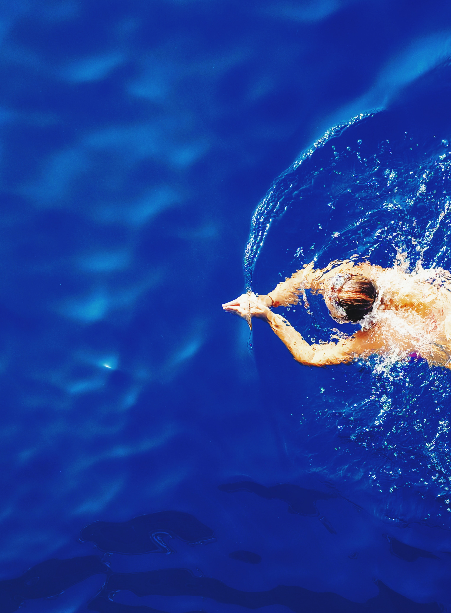

평영
가장 오래된 수영 영법으로, 움직임이 개구리가 수영하는 모습과 비슷하다 하여 ‘개구리헤엄’이라 부르기도 한다. 몸을 수면 아래로 향한 상태에서 팔과 다리를 번갈아 가며 오므렸다 피면서 전진한다. 호흡은 팔 동작 시에 머리가 수면 위로 나오면서 이뤄진다. 머리를 들 수 있고, 비교적 호흡이 자유롭고 안정적으로 헤엄칠 수 있기 때문에 초보자들이 많이 익히지만, 상당한 지구력과 다리의 힘을 요구하는 영법이기도 하다. 다리 동작 시 다른 영법에 비해 물의 저항을 크게 받기 때문에 빠른 속도를 내기 어려우며, 주로 인명 구조, 취미 수영 등에서 널리 사용된다.
